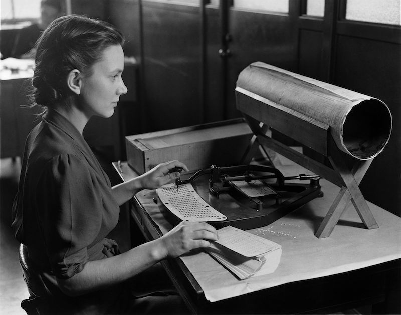

History? Really? In a rapidly evolving field of augmented reality, driverless cars, and rich social media, is there any more mundane way to start a book on user interfaces? Probably not. And yet, for a medium that is invented entirely from imagination, the history of user interfaces is reminder that the interactive world we experience today didn't have to be. Files, keyboards, mice, and touchscreens—all of these concepts were invented to solve very real challenges with interacting with computers, and but for a few important people and places in the 20th century, we might have invented entirely different ways of interacting with computers.

In the beginning of digital computing, all computers were programmed, meaning that all user interfaces were programming interfaces. If you used a computer, it meant constructing programs out of individual machine instructions like add, subtract, or conditional jump, or early higher order programming languages like FORTRAN. The experience of using these was not pointing, clicking, and typing, but rather punching cards to encode instructions for computers to execute. Once one secured some time on the mainframe, it would crunch through the punchcard's instructions, computing a result. This interaction paradigm captured the early visions of computing as essentially calculation automation, freeing humans from the burden of arithmetic.
In the 1940's, some found this vision too limiting. Most notably, Vannevar Bush, a science administrator who headed the U.S. Office of Scientific Research and Development, wrote a 1945 article in The Atlantic Monthly, called "As We May Think." In it, he envisioned a device called the "memex," in which people could store all of their information, including books, records, and communications, and access them with speed and flexibility (Bush 1945). Notably, Bush imagined the Memex as an "enlarged intimate supplement to one's memory." This vision, which directly inspired hypertext and the Internet, didn't anticipate everything (there was no search or metadata), but it forcefully conveyed an alternative vision of computers as purely automated calculation machines, and instead as a form of human augmentation.
Here is how Bush described the Memex:
Consider a future device for individual use, which is a sort of mechanized private file and library. It needs a name, and, to coin one at random, "memex" will do. A memex is a device in which an individual stores all his books, records, and communications, and which is mechanized so that it may be consulted with exceeding speed and flexibility. It is an enlarged intimate supplement to his memory...
Wholly new forms of encyclopedias will appear, ready made with a mesh of associative trails running through them, ready to be dropped into the memex and there amplified. The lawyer has at his touch the associated opinions and decisions of his whole experience, and of the experience of friends and authorities. The patent attorney has on call the millions of issued patents, with familiar trails to every point of his client's interest. The physician, puzzled by a patient's reactions, strikes the trail established in studying an earlier similar case, and runs rapidly through analogous case histories, with side references to the classics for the pertinent anatomy and histology. The chemist, struggling with the synthesis of an organic compound, has all the chemical literature before him in his laboratory, with trails following the analogies of compounds, and side trails to their physical and chemical behavior.
Remind you of anything? The internet, hyperlinks, Wikipedia, networked databases, social media. All of it is there in this prescient description of human augmentation, including rich descriptions of the screens, levers, and other controls for accessing information.
J.C.R. Licklider, an American psychologist and computer scientist, was also fascinated by such visions of human augmentation, writing in his "Man-Computer Symbiosis" (Licklider 1960):
...many problems that can be thought through in advance are very difficult to think through in advance. They would be easier to solve, and they could be solved faster, through an intuitively guided trial-and-error procedure in which the computer cooperated, turning up flaws in the reasoning or revealing unexpected turns in the solution. Other problems simply cannot be formulated without computing-machine aid. Poincare anticipated the frustration of an important group of would-be computer users when he said, "The question is not, 'What is the answer?' The question is, 'What is the question?'" One of the main aims of man-computer symbiosis is to bring the computing machine effectively into the formulative parts of technical problems.
He then talked about visions of a "thinking center" that "will incorporate the functions of present-day libraries together with anticipated advances in information storage and retrieval," connecting individuals and computers through desk displays, wall displays, speech production and recognition, and other forms of artificial intelligence. With this vision, and through his work in United States Department of Defense Advanced Research Projects Agency, and as a professor at MIT, funded or faciliated the research that would lead to the internet and the graphical user interface.
One person that Bush and Licklider's ideas influenced was MIT computer scientist Ivan Sutherland. He followed this vision of human augmentation by exploring interactive sketching on computers, working on a system called Sketchpad for his dissertation (Sutherland 1963). Sketchpad allowed drawing of segments, arcs, and constraints between shapes. Shapes could be transformed, resized, repositioned, and clipped, and a notion of windowing allowed zooming and panning. The entire interactive experience was stylus-based and the implementation paradigm was object-based. This was the first system to ever demonstrate an interactive dialog with a computer, rather than a "batch processing" programming-based interaction. You can see Sketchpad in action in the video above.
Sketchpad, and Bush and Licklider's article, inspired Douglas Engelbart to found the Augmentation Research Center at the Stanford Research Institute (SRI) in the early 1960's. Over the course of about six years, with funding from NASA and the U.S. Defense Department's Advanced Research Projects Agency (known today as DARPA), Engelbart and his team prototyped the "oN-Line System" (or the NLS), which attempted to engineer much of Bush's vision. NLS had networking, windows, hypertext, graphics, command input, video conferencing, the computer mouse, word progressing, file version control, text editing, and numerous other features of modern computing. Engelbart himself demoed the system to a live audience in what is often called "The Mother of all Demos." You can see the entire demonstration in the video above.
Engelbart's research team eventually disbanded, and many of them ended up at the Xerox Palo Alto Research Center (Xerox PARC). Many were truly inspired by the demo, and wanted to use the freedom Xerox had given them to make the NLS prototype a reality. One of the key members of this team was Alan Kay, who had worked with Ivan Sutherland and seen Engelbart's demo. Kay was interested in ideas of objects, object-oriented programming, and windowing systems, and created the programming language and environment Smalltalk. He was a key member of a team at PARC that developed the Alto in the mid 1970's. The Alto included the first operating system based on a graphical user interface with a desktop metaphor, and included WYSIWYG word processing, an email client, a vector graphics editor, a painting program, and a multi-player networked video game.
Now, these were richly envisioned prototypes, but they were not products. You couldn't buy an Alto at a store. This changed when Steve Jobs visited Xerox PARC in 1979, where he saw a demo of the Alto's GUI, it's Smalltalk-based programming environment, and it's networking. Jobs was particularly excited about the GUI, and recruited several of the Xerox PARC researchers to join Apple, leading to the Lisa and later Macintosh computers, which offered the first mass-market graphical user interfaces. Apple famously marketed the Macintosh in it's 1984 advertisement, framing the GUI the first salvo in a war against Big Brother, a reference to the book, 1984.
Since the release of the Macintosh, companies like Apple, Microsoft, and now Google, have driven much of the engineering of user interfaces, deviating little from the original visions inspired by Bush, Licklider, Sutherland, Engelbart, and Kay, but continuing to harvest basic research for new paradigms of interaction, including the rapid proliferation of capacitive touch screens in the early 2000's in smartphones. But research continued. Around the same time as the release of the Macintosh, many computer scientists who had worked in computer graphics (a field started by Sutherland), spun off a new conference in 1988, the ACM Symposium on User Interface Software and Technology. This community brought together researchers interested in not only the useful output that computers could produce, but also the novel forms of input, and the interaction paradigms that combinations of input and output could produce. This community has since worked alongside industry, establishing the basic paradigms for graphical user interface widgets (as gloriously portrayed across two hours in the video above), while continuing to invent new ways of interacting with computers, including paradigms such as augmented reality, touchscreens, more efficient text entry, and animation. The rest of this book covers many of these innovations in detail.
One of the most remarkable things about this history is how powerful one vision was to catalyze an entire world's experience with computers. Is there something inherently fundamental about networked computers, graphical user interfaces, and the internet, or if someone else had written an alternative vision for computing, would we be having different interactions with computers, and therefore different interactions with each other through computing? This history is a reminder that nothing about our interactions with computing is necessarily "true" or "right": they're just ideas that we've collectively built, shared, and learned—and they can change. In the coming chapters, we'll uncover what is fundamental about user interfaces, and explore alternative visions of interacting with computers.
Vannevar Bush (1945). As we may think. The Atlantic Monthly, 176(1), 101-108.
Stuart K. Card, Thomas P. Moran (1986). User Technology: From Pointing to Pondering. ACM Conference on the History of Personal Workstations 1986.
Freed, L., & Ishida, S. (1995). History of computers. Ziff-Davis Publishing Co.
James Gleick and Rob Shapiro (2011). The information.
J. C. R. Licklider (1960). Man-Computer Symbiosis. IRE Transactions on Human Factors in Electronics, volume HFE-1, pages 4-11, March 1960. MIT Computer Science and Artificial Intelligence Laboratory.
Brad A. Myers (1998). A brief history of human-computer interaction technology. interactions 5, 2 (March 1998), 44-54.
Brad Myers, Scott E. Hudson, and Randy Pausch (2000). Past, Present and Future of User Interface Software Tools. ACM Transactions on Computer-Human Interaction, 7(1), 3-28.
Andries van Dam (1997). Post-WIMP user interfaces. Communications of the ACM 40, 2, 63-67.
Ivan Sutherland (1963/2003). Sketchpad, A Man-Machine Graphical Communication System. PhD Thesis at Massachusetts Institute of Technology, online version and editors' introduction by A.F. Blackwell & K. Rodden. Technical Report 574. Cambridge University Computer Laboratory.
Mark Weiser (1991). The Computer for the 21st Century. Scientific American 265, 3 (September 1991), 94-104.